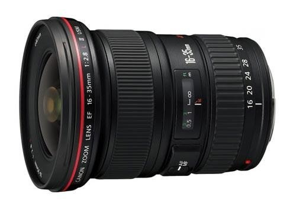

 覆盖从超广角到准广角焦段的大光圈广角变焦镜头。恒定F2.8的最大光圈，使其可应对光量不足的拍摄环境。昏暗场景下取景器画面仍很明亮，便于影像的确认与拍摄。而且，不仅是镜头接环，开关面板、开关、变焦环、对焦环等都进行了密封处理。是一款在防水滴防尘※性能方面可满足专业摄影师苛刻要求的L级镜头。12组16片的镜头结构中有效配置了种类不同的3片高精度非球面镜片（研磨型、玻璃模铸型、复合型各1片）。其中第1片采用的是高精度研磨非球面镜片，加之第2片采用的大口径复合非球面镜片，实现了对入射光线的准确控制。而2片UD（超低色散）镜片的采用能有效抑制倍率色像差，从而使被摄体边缘部分的色晕得到了较大程度的抑制。画面边缘成像好，使用35mm全画幅相机拍摄可发挥出其真正的实力。风光摄影中，树木的细节与山脊的棱线也能拍得很锐利。在进行都市风光的拍摄时，建筑物的细节可忠实表现出来。虽然是广角变焦镜头，但其虚化效果十分漂亮。35mm端拍摄自不待言，使用16mm端接近被摄体拍摄，也可灵活运用虚化效果。高性能可实现丰富的表现形式。
※本镜头虽然具有一定的防水滴性能，但是如果在雨天拍摄时，请尽量不要淋湿。
| 镜头焦距 | 16-35mm |
|---|---|
| APS-C画幅下的35mm规格换算焦距 *1 | 约26-56mm |
| 镜头结构 | 12组16片 |
| 光圈叶片 | 9片（圆形光圈） |
| 最小光圈 | 22 |
| 最近对焦距离 | 约0.28米 |
| 最大放大倍率 *2 | 约0.23倍 |
| 驱动系统 | 环形USM超声波马达 |
| 手抖动补偿效果 | 约4级(35mm焦距端，根据CIPA标准) |
| 滤镜直径 | 77毫米 |
| 最大直径及长度 | 约Φ82.6×112.8毫米 |
| 重量 | 约615克 |